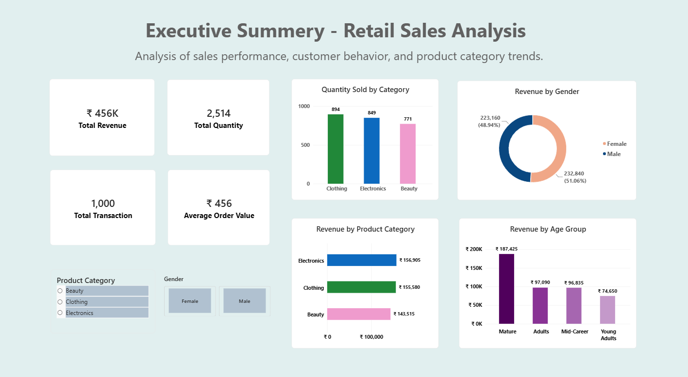
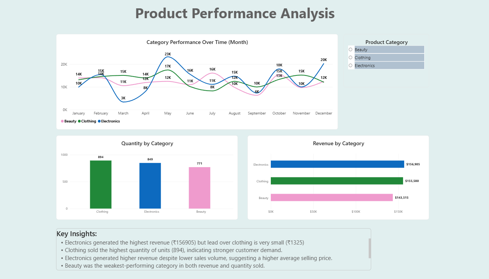
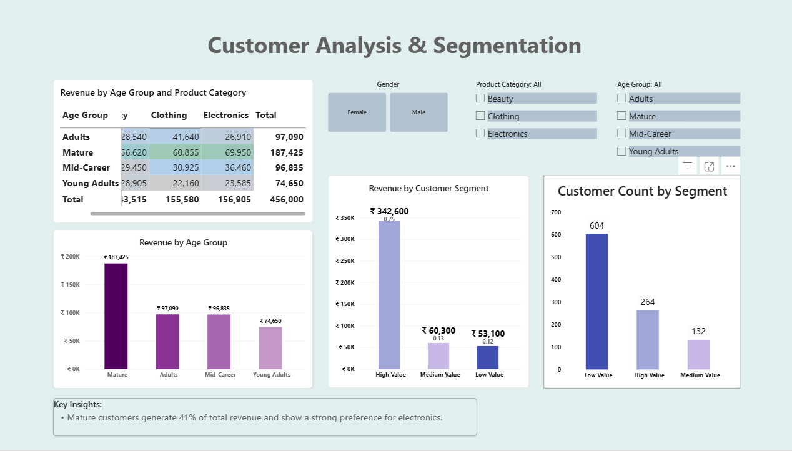
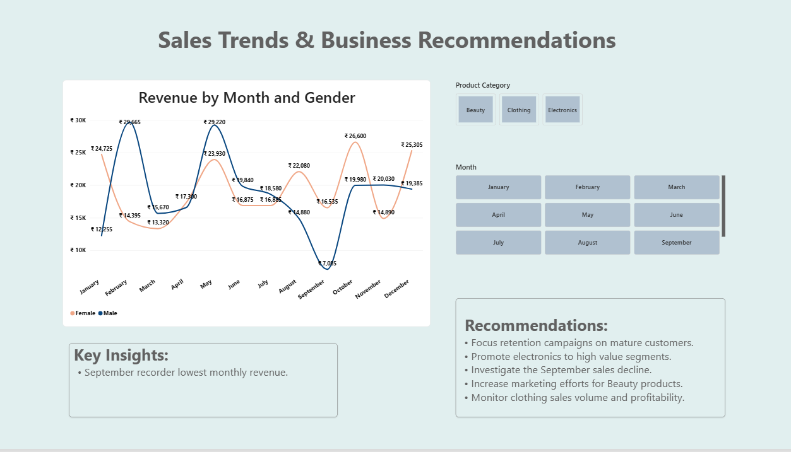

Business Intelligence Project focused on customer behavior, product performance, and sales trend analysis.
This project analyzes retail sales data to identify customer purchasing patterns, top-performing product categories, and revenue trends.
The objective was to transform raw transaction data into actionable business insights and recommendations using Excel and Power BI.



